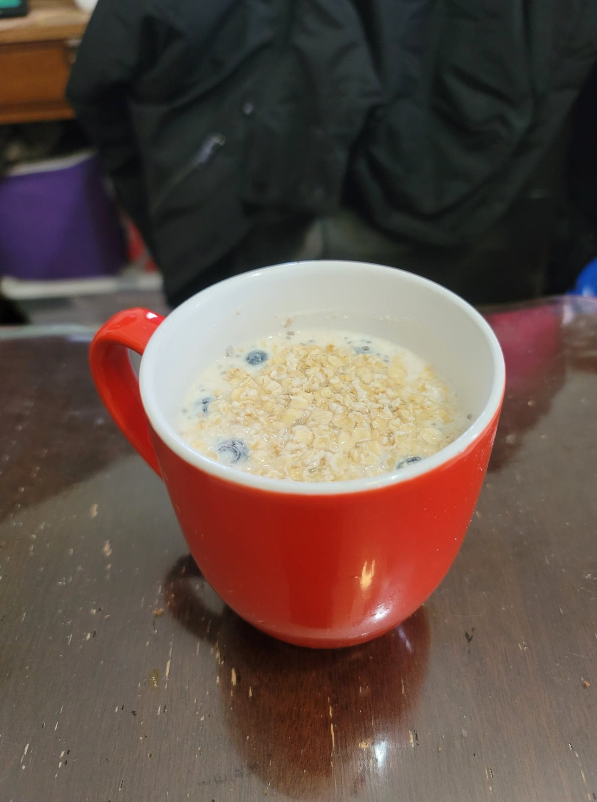

Overnight Oatmeal Yogurt

Ingredients:
- 1/3 cup Oatmeal + 1 tsp for garnish
- 1/3 cup Milk
- 1/3 cup Yogurt
- Optional: 1 tsp Chia seeds
- 1/2 tsp Vanilla extract
- 1 tbsp Maple syrup, or to taste
- 1/2 cup Fruits or Berries of choice
Instructions:
- Into a 16 oz cup or jar, combine all the ingredients except for the berries until homogenous. Then fold in the berries. Garnish with 1 teaspoon oatmeal and seal with lid or plastic wrap. Let rest in the fridge overnight or up to 5 nights. Stir one last time right before eating.